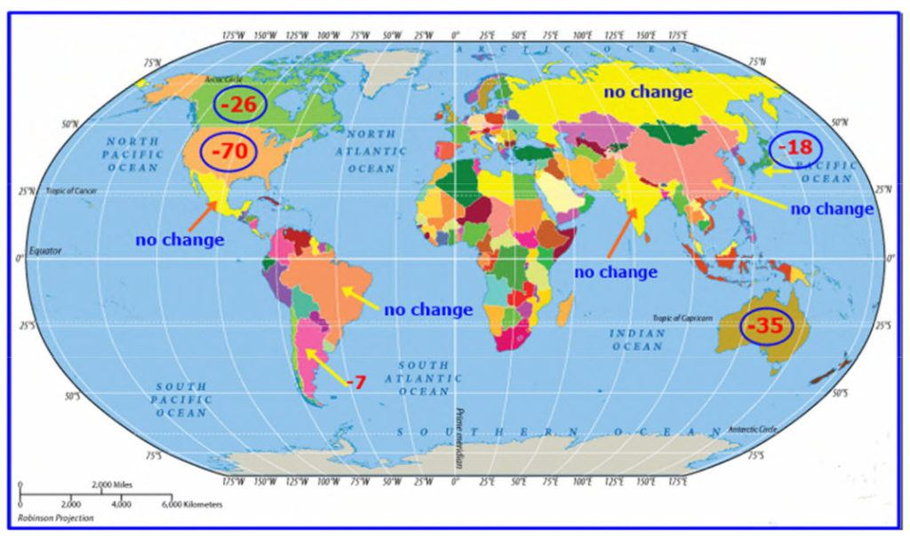
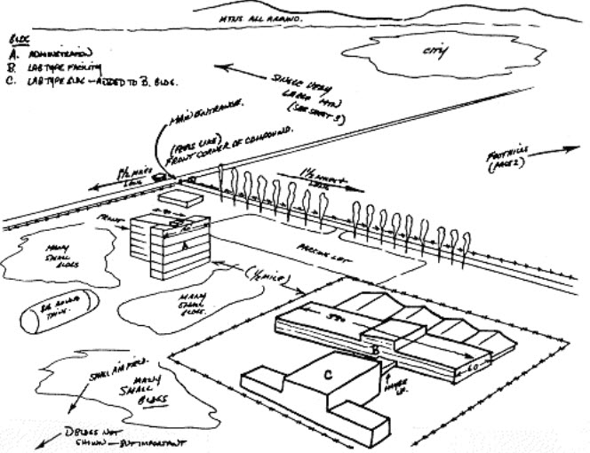
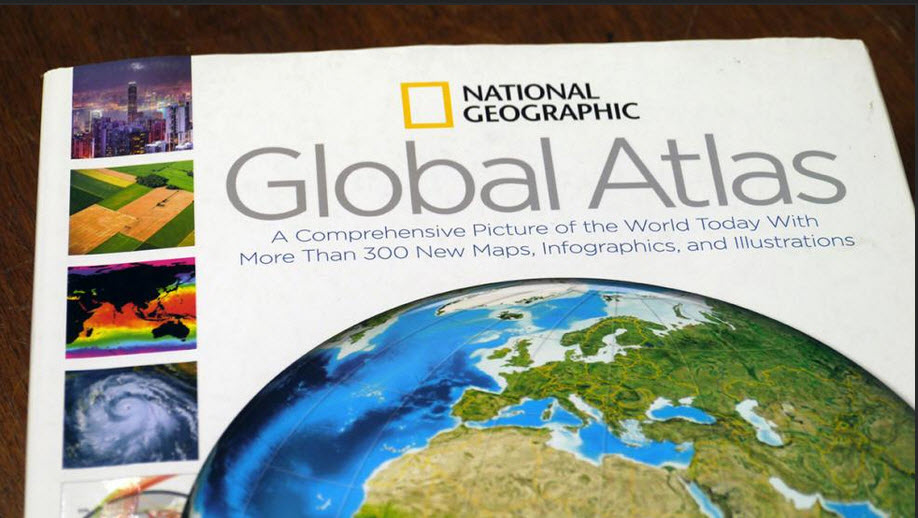
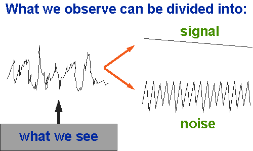
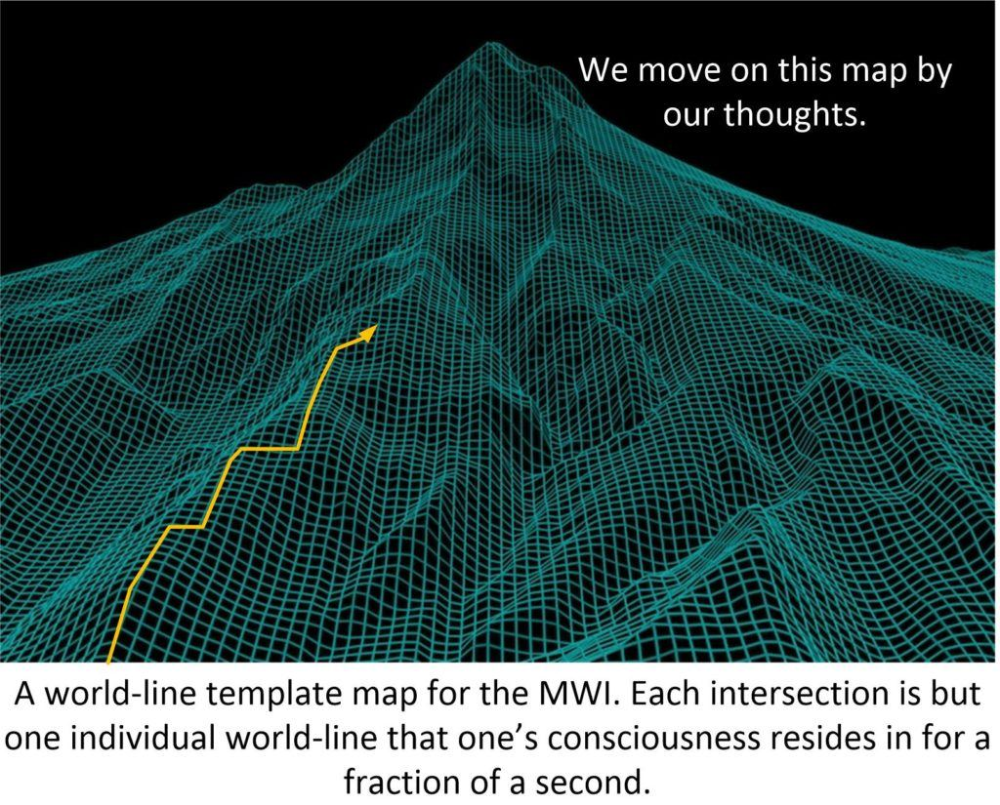
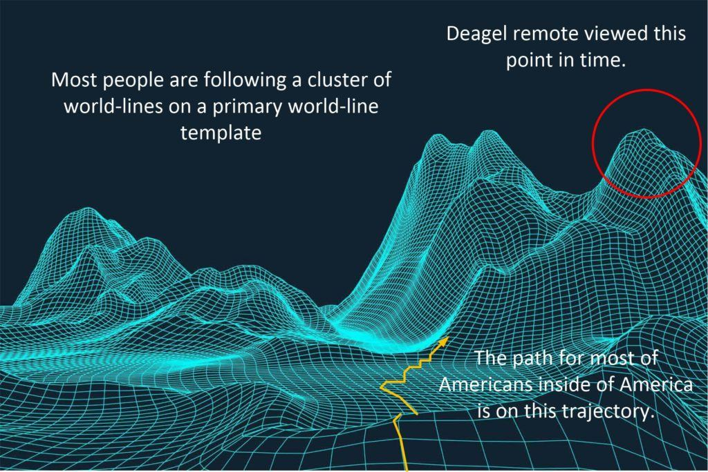
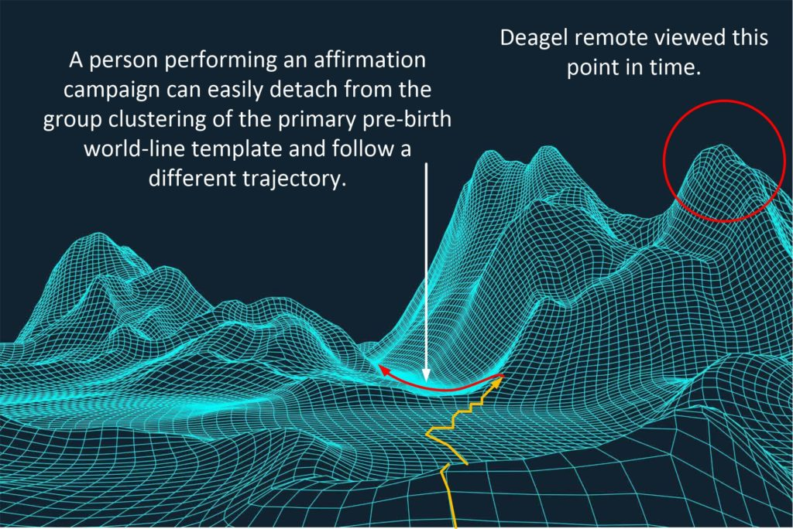

How’s that for a “mouth full” headline. Nah. Not the kind of stuff that you were expecting from ol’ MM was it. But (I am so sorry) I am being “pestered” to draft this up. And it truly is “pestering”, and I don’t like it ok? And don’t bother asking why I am publishing this article now, of all times. I haven’t a clue.
And that’s the way it works, don’t you know. So just enjoy the read, and if this article resonates with you, then great for you! Otherwise, just get some wine, a fine companion, and eat some delicious tasty food… stuff that you can savor and smell.
Oh, and one more thing.
In this analysis we are going to entertain a professional Remote Viewer for his comments on the Deagel Forecast. And given that I am being so insanely driven to push this article out (for God know what reason), I am including the entire conversation with him.
And it goes everywhere.
So buckle up. Some of it might be important to some people, and some of it might not be to others. So just relax and take from this article what is important to you, and ignore the rest.
OK?
Introduction
The Deagel corporation is a minor branch of US military intelligence, one of the many secretive organizations which collects data for high-level decision-making purposes and prepares confidential briefing documents for agencies like the National Security Agency, the United Nations, and the World Bank.
It’s a work of “love” from some retired intelligence assets, and like most of us ex-spooks, it’s hosted outside of the United States. Just like MM here. We have VERY good reasons to do so. Reasons that are far too complex to get involved in right this moment. But we DO KNOW what we are doing. Never doubt that.
Deagel is known, for example, to have contributed to a Stratfor report on North Korea. With this kind of pedigree, Deagel should be seen as a legitimate player in the intelligence community and not merely a disinformation asset.
If so, then it must be assumed that its population predictions for 2025, as well as its industrial output predictions on a nation-by-nation basis, are based on strategic assumptions which are shared and well understood by other players in the intelligence community.
Until the start of the Covid ‘pandemic’ many commentators were perplexed by the Deagel spreadsheets.
Perhaps they were part of a psychological operation?
However, in light of recent events, we are obliged to consider a possible connection between the projected massive reduction in the population of certain countries, forecast by Deagel, and other trends going on right now.
Trends?
What trends?
- Devaluation of the Dollar with an out of control American Congress.
- Strange insistence in using a mRNA vaccine instead of a traditional “dead host” vaccine.
- A global pandemic that America is just fucking up royally.
- Desire for a war with China.
- Desire for a war with Russia.
- Desire for a war with Iran.
- China, Russia and Iran forming a unified Asian block.
- Race war in the United States.
- Progressive onslaught and control of all electronic media.
- Looming bubbles in just about every facet of American life.
And so on and so forth…
The Deagel scenario
The Deagel corporation was asked to explain the thinking behind its strange set of population and output figures. While we cannot take its response at face value, it nonetheless paints a picture that is very similar to the world we now see. And this is not an exaggeration at all.
Consider…
[1] A fake American GDP
In short, they argued that the US government has greatly over-stated the real level of US GDP. This means the country will be fatally exposed when the next economic crisis strikes.
How can the GDP be so high that a full 61% of Americans are so poor that they do not pay Federal Income Taxes? It defies rational understanding.
[2] A Pandemic Scenario
They also take into account a “pandemic scenario” – their term – caused by Ebola or a similar pathogen. This, they say, would cause an exceptionally high death rate, placing extreme pressure on healthcare providers across America and greatly reducing economic output.
[3] A financial crisis with the US Dollar
This pandemic could quickly spiral out of control and create an international financial crisis:
“The collapse of the Western financial system will wipe out the standard of living of its population while ending Ponzi schemes such as the Stock Exchange and the pension funds.”
Trying to figure it out…
They try to explain the predicted dramatic fall in the population of the US by reference to a massive outward migration of millions of Americans seeking economic relief in other countries, but this is unconvincing.
They seem to concede this themselves when they add a further explanatory factor – widespread suicide in response to economic distress. But this too is unsatisfactory.
Their primary reason for predicting a colossal drop in the population of the US by 2025 – a fall of up to 70 percent – is the scale and severity of the alleged pandemic.
As they put it,
“the death toll will be horrible.”
Map
Here’s a map showing the predictions made in the forecast. You see that Asia is unscathed, while America and the West suffer horribly.
- Japan will lose 1/5th of it’s population!
- Australia will lose a full 1/3rd of it’s population!
- Canada will lose 1/4th of it’s population!
- The United States will lose almost 3/4ths of it’s population!

Timing
By all accounts, historically, the massive drop in population at this time is validated by the “Fourth Turning” predictions. The date and timing all agree with the Strauss and Howe model for America.
This model is United States centrist, and acknowledges that different societies and different cultures have different “turnings” and generational changes.
Casualty Figures
The casualty figures are gargantuan. They are over and above what one would associate with such things as…
- Civil War = 2% to 10%.
- Genocide = from 25% to 99% of the population.
For example; 77.0% of the Tutsi population of Rwanda. 85 percent of the population in the Hutu ethnic group. In Cambodia, 70% of the total Cham population, were exterminated.
- World War = 6% to 9% of the population (World War II).
- Global Military Empire = 11%
Genghis Khan’s legacy is one of a ruthless warrior who dominated unimaginable amounts of territory. He slaughtered about 40 million people and reduced the population of Earth by 11 percent.
- Pandemic = 15% to 60%
The Bubonic plague was a deadly pandemic that wiped out a massive chunk of population in the World during the mid-1300s. In Europe alone the plague wiped out nearly 50% of Europe’s population.
- Nuclear War = 30% to 85%
- Economic Collapse = 1% to 30%
An American centered fiasco
Candidate disaster combinations
Here are some of my suggested candidate combinations that allow us to better understand how those enormous population causality figures could be reached…
- Global pandemic, AND genocide.
- Global pandemic, AND civil war WITH genocide.
- Global pandemic, AND collapsing Military Empire, WITH war.
- Global Military Empire AND Nuclear War WITH Global pandemic.
So how did they come up with these numbers?
Indeed, these are truly shocking numbers and values. So shocking, that it’s simply not an extrapolation of trends. As an extrapolation of trends show things either moving towards “infinity” or falling into a “black hole”. But there is no way to be able to quantify that data into numbers.
So, how the heck did they come up with these values that they are using? And they have come up with specific values and specific data. And it is all very, highly specific. Such as this…
Specific Data and values
Here’s some of the very specific data that they have come up with…
The countries that will suffer the greatest reduction in population, according to Deagel (as per 2014), are:
That’s pretty darn specific. Don’t you know.
Remote Viewing
Remote viewing is defined as the ability to acquire accurate information about a distant or non-local place, person or event without using your physical senses or any other obvious means.
It’s associated with the idea of clairvoyance, seemingly being able to spontaneously know something without actually knowing how you got the information.
It is also sometimes called “anomalous cognition” or “second sight.”
Many of us experience this from time to time as an intuitive flash of insight that turns out to be correct.
Many well-known entrepreneurs and business people, like George Soros, Conrad Hilton, Thomas Alva Edison and Akio Morita, the co-founder of Sony, have attributed their business success to this ability.

And (of course) we’ve all seen natural psychics perform seemingly amazing feats of mental skill on TV.
The difference between natural psychic receptivity and remote viewing is that the latter is a trained skill, a controlled process, that the average person can learn to do, to some degree or another.
History of the Remote Viewing Program
Remote viewing in modern times originates from the U.S. Government’s interests in psychic espionage during the Cold War with the Soviet Union.
Back during World War II, the Soviets had heard rumors that the U.S. Military were using psychic communications at sea.
While it’s not clear now whether this was really true, the Soviets believed it. And that is, after all, all that matters.
They started their own psychic training within their military and intelligence agencies many decades ago.
The U.S. Government learned of this program and, in the early 1970’s, decided to create their own remote viewing CIA training program.
Stanford Research Institute Remote Viewing Tests
Money and resources (from the Federal government, and buried in the R&D section of the government) were given by the Central Intelligence Agency to Stanford Research Institute (SRI).
That that time, they were located on the campus of Stanford University. And their charter was to test the possibility of remote viewing.
The goal was to disprove that psychic functioning was real.
No one wanted it to exist.
It was the last thing that the military establishment wanted to worry about, especially if it was a new Soviet threat.
Physicists Russell Targ and Hal Putoff working at SRI were tasked with determining whether Extrasensory Perception (ESP) and related phenomena were real or not.
So they set about to locate some natural psychics and test them.
Their first subject was artist, psychic and scientist Ingo Swann of New York City. He had demonstrated an ability to accurately “remote view” weather in various American cities.
He had published some articles about ESP and psychokinesis (the ability to mentally affect distant objects) when he worked with researcher Gertrude Schmeidler of City College, New York (and the American Society for Psychical Research.)
Working with Schmeidler, Swann had demonstrated that he could affect the temperature of thermistors sealed in insulated thermos canisters twenty-five feet away from him. Which (of course) was an amazing feat.
At a friend’s request, Swann sent his published findings to Putoff.
Upon reviewing them, Putoff asked Swann to come to SRI and demonstrate his abilities.
The first thing they had Swann do was to see if he could affect a super sensitive, (electromagnetically shielded) quark-detector buried five feet underground in a cement floor.
Every time Putoff asked Swann to think about the detector (used to detect subatomic particles), the readings from the device would noticeably deviate from the baseline readings.
Putoff was convinced that Swann had special abilities and so the program to test and develop remote viewing began.
Expanded Scope
At first they had Swann view objects in a box: this was a practice he was good at but quickly became bored with.
Swann said to them:
“I can view anything in the universe, this is a trivialization of my abilities.”
A few days later he came up with a new way to do remote viewing: viewing map coordinates.
Targ and Putoff went out and bought the biggest atlas they could find at the local book store.And so they started taking coordinates from the map, putting the coordinates in individual blank envelopes, and had Swann image the places at those coordinates at random.

Swann’s coordinate map viewing turned out to be a big success.
But, of course, critics were everywhere. No one in the military, or the government wanted to believe the findings. Indeed, a critic at the Central Intelligence Agency suggested that maybe he had memorized the entire global map.
Swann went on to use randomly chosen numerical coordinates to view randomly selected events, people and structures around the planet. He performed equally well using this coordinate-based viewing system.
Overview
Some quick notes on Remote Viewing.
- Remote Viewing occurs in a sterile workspace. Most reports of paranormal events come from outside the science lab, and when research is done on these cousins of RV, it is somewhat like examining the natural history of some specimen brought in from the wild. When clairvoyance (RV’s closest relative) was done under controlled conditions for research purposes, it was generally targeted at such things as cards or colors, since these sorts of targets allowed easy scoring of experimental results. Remote viewing, on the other hand, was actually developed and first explored in a research setting . And the sorts of targets used for RV research differed from those typically used in other psi research. Targets chosen for “viewing” include geographic locations, hidden objects, and even such things as archaeological sites and space objects about which it was expected that ground truth would eventually become known, so that the viewer’s accuracy could be checked.
- Remote Viewing is a combination of observed sensings. Unlike most other psi disciplines, remote viewing is not precisely one thing, but rather an integrated “cocktail” of various phenomena. Despite the “viewing” part of the term, remote viewing is only partly about experiences associated with what might be visible about a target. It also involves mental impressions pertaining to the other senses, such as sounds, tastes, smells, and textures, as well as limited telepathy-like effects, and in some cases just plain intuitive “knowing.” RV owes some of these qualities to the fact that lessons learned from research in clairvoyance, telepathy, and even out-of-body experiences — traditionally considered separate disciplines — played a role in its development. In remote viewing, the viewer not only verbalizes what he or she is perceiving, but usually also records in writing, in sketches, and sometimes even in three-dimensional modeling the results of the remote viewing episode, or “session.”
- Remote Viewing is Structured. Remote viewing tends to be more structured than other psi disciplines. In some important varieties of remote viewing, viewers follow specific scripted formats. These formats are designed to enhance the viewer’s performance in various ways, such as to better deal with mental “noise” (stray thoughts, imaginings, analysis, etc. that degrades the “psychic signal”) or to allow incoming data to be better managed. Some of these structural methodologies are widely used. Other methods are more personal. An individual remote viewer, for example, might through trial and error develop his or her own customized approach.
- Strict science-based protocol. Proper remote viewing is done within a strict science-based protocol. As mentioned, the remote viewer is kept unwitting of either the nature or identity of the target until after the session is completed. Except in training situations, the monitor (a sort of remote viewing “guide” or facilitator that may assist the viewer during the session) is also unwitting, and external clues or data about the target are carefully excluded. Sessions are conducted in a setting that prevents knowledge of the target “leaking” to the viewer. These measures are important to insure that the viewer does not receive hints or clues about the target in any way other than what would be considered “psychic.”
What is Remote Viewing?
Swann coined to term “remote viewing” to describe the process though you can question whether the information is actually remote to the viewer or whether the process is entirely visual.
Some people are more sensitive to auditory, kinesthetic or other types of sensory information and few viewers actually “see” the target very clearly.
Nonetheless, the name stuck and was sufficient to convince the intelligence agencies to fund the project.
Other viewers were also tasked to help Targ and Putoff understand remote viewing.
Pat Price, a former police commissioner from Burbank, CA also proved to be an excellent viewer. Price used his own system to view where he actually imagined that he was at the distant target site.
His results were so good that the Central Intelligence Agency hired him to work for them directly.
Back East, another natural viewer Joe McMoneagle, also known as “Remote Viewer No. 1,” worked directly with the U.S. Army and the Defense Intelligence Agency.
He was also tested and found to have amazing abilities to describe and sketch distant locations. Upon retirement, McMoneagle was awarded a Legion of Merit award, in part, for his five years of remote viewing missions for the military and various government agencies.
Coordinate Remote Viewing
However, Swann was able to describe, with great precision, what he was doing with his mind and attention as he was viewing, an ability other viewers did not have.
This allowed him to come up with a 6-stage system that could be taught to anyone, including you or me. It became known as CRV: Coordinate (or Controlled) Remote Viewing.
Swann’s CRV system is based on separating out signal from noise in your mind as you are viewing.

All the information is recorded during a session, but the viewer puts the noise in a different place on the paper than the signal.
At the end of the session, you can separate them from one another.
The method became the basis of the remote viewing protocols that the U.S. army taught to several groups of viewers.
The program lasted until 1995 when it was declassified; about $20 million was spent over the two decades. It is now part of "deep black" SAP programs and commercial programs for profit.
Princeton’s Random Number Generator Research
During this time, the Princeton Engineering Anomalies Research Lab (PEAR) at Princeton University, run by Bob Jahn and Brenda Dunn, also conducted twenty years of research into remote viewing.
They referred to this as the so-called “micro-psychokinesis”.
They conducted experiments on the effect of human intention on Random Number Generators (RNGs).
They found that, looking at the cumulative results of hundreds of thousands of trials, that their subjects could influence about 2 or 3 events per 10,000 random coin flip.
Thus being able to move the device away from true randomness by thought alone.
The odds of these results being by chance were an astonishing 375 trillion to one.
Open the Aperture of Your Perception
When someone asks you to describe something, you normally proceed to name what you’re perceiving using nouns and symbols.
"I see a man holding a dog". He is on a bench. He is in a park. The dog is hungry and barking at the food in the stall nearby.
Remote viewing is just the opposite.
You begin by describing your perceptions without trying to identify anything about what they mean or what the larger picture is.
Natural. Noise. Hungry feeling. Green. Resting.
You begin with basic gestalts: fundamental, general components of the target site like whether it’s manmade or living or natural. You then proceed to basic colors, smells, temperatures, shapes and sizes.
Only after you’ve been describing the target for a while can you proceed to more specific ideas and possibly names, nouns and more analytical types of information.
Follow the Ambiguity
Our minds are always attempting to draw conclusions from what we’ve perceiving at any given moment.
But this isn’t really desirable in a Remote Viewing exercise.
If you try to do this, you will always likely to be wrong. Which brings us to one of the great paradoxes of RV: the fainter the perception, the more likely it is to be accurate and the less likely you are to feel confident in that perception.
- In other words, the more confident you are about your psychic perceptions during the session, the less likely those perceptions are to be correct!
- And the less confident you feel, the more likely it is that your perceptions are right on. How’s that for a paradox?
Someone familiar with the military viewing program once told me that if a viewer finished a session and said with confidence “I nailed it!,” that viewer’s session would be thrown in the garbage. A good session is one in which the viewer has no idea what they’ve been doing or whether it’s accurate or not.
This is very different from the way our educational system, which stresses linear and rational thinking, trains us to deal with acquiring and processing information.
Eventually, you see the benefits: you learn to trust your intuition more and don’t necessarily need to rationalize everything before you take action. You become more spontaneous which can often be a good thing if you’re used to over-thinking things in your life.
Scientific Analysis of the Remote Viewing Program
When the RV program was declassified, one of the two people asked to evaluate the program was statistician Jessica Utts, the head of the American Statistical Association.
She concluded:
“Using the standards applied to any other area of science, it is concluded that psychic functioning has been well established. Arguments that these results could be due to methodological flaws in the experiments are soundly refuted. Effects of similar magnitude to those found in government-sponsored research at SRI and SAIC (another government sponsored think tank) have been replicated at a number of laboratories across the world. Such consistency cannot be readily explained by claims of flaws or fraud.”
And researcher Dean Radin, doing very complex meta-analyses using the results of many studies about psychic perception over many decades, came to the same conclusion.
Looking at the entire population, not just trained viewers, RV is a weak effect, about four to eight percent higher than expected if we were only using our physical senses to gather information: yet, it’s consistently there in everyone.
How Does Remote Viewing Work?
So RV is scientifically proven to work.
But how?
What’s going inside the viewer’s body and mind? How do they access far away information with such great accuracy?
You can pick your favorite explanation but the truth is, no one knows for sure. But my feeling is that it has something to do with resonance, vibration and frequency on the quantum level. And to this end I have generated explanatory template maps for the MWI.

Right brain thinking tends to be free flowing, intuitive and descriptive while left brain thinking is more analytical, linear and symbolic.
Good remote viewers learn to distinguish their own left and right-brain thinking.
They’re good at discerning the difference between the two and can separate signal from noise. Remote viewing tends to be more more accessible to the right-brain type.
Picking Up Signals Through Vibrational Resonance
Where does the information come from?
Well, if you look around the space wherever you are at the moment, the air will seem empty: you can’t see the air with your eyes. But you also know that it’s filled with electromagnetic information from cell phone signals, radio waves, TV signals, etc. So empty space can be filled with information coming to you from distance. Just because you can’t see it, doesn’t mean it isn’t there.
That information is coming to you through a type of vibrational resonance that fills space-time.
When you have a receiver that is tuned to the frequency of those signals, you’ll pick them up.
All you need to do after that is to amplify the signal.
Remote viewing doesn’t necessarily amplify the signal of what you’re viewing, but it does teach you how to reduce your own mental noise, your monkey mind.
Yeah, but what about Deagel? And the future?
I argue that there must have been some technique, other than “extrapolation of data applied to historical models“, to come up with the data that Deagel presented. And the only publicly known method is via Remote Viewing.
Of course, there is the time-travel, and 5th and 7th dimensional travel mechanisms. I have discussed this elsewhere. And those are indeed valid methods of "time travel;", but I do not believe that they are actually being used at this time, in this case.
Remote Viewing The Future
Remote viewing the future is possible because time does not exist and therefore it is possible to reach out and link with events that are happening in a future “now” upon the world-line MWI template map.
This can only be done for a relatively short period into the future because the further one looks into the future, the more variables can change what happens.
What happens is that, based on what has occurred or what is going on at the moment, a sort of inevitability occurs.
An Apple Tree Example
For instance, if an apple falls from a tree, there is a strong possibility that it will fall to the ground.
Now, if at a certain time a person walks towards the tree, is it possible to predict if the apple will hit the person on the head or not? Many variables will come into play that permit the apple to hit the person on the head – or not – so it is not usually possible to predict with absolute certainty such an event.
A remote viewer looks out along timelines and picks up the most dramatic events that are likely to occur. Then the person tries to see what is likely to happen. But, as nothing is totally certain, they can only predict with greater or lesser accuracy.
The events along any timeline are quite simply projections of “now” events. The “now” moment is constantly altering but each succeeding “now” moment is dependent on the preceding one to a certain extent.
But given the over all MWI template that most people seem to be using, it can become relatively easy to Remote View upon this template and describe a future that will exist for a wide selection of people.
So, to describe it simply, if one looks at a series of single moments in time, for instance concerning the apple growing on a tree, we can see that the apple ripens and, eventually, falls from the tree. The exact moment when the apple will depart from the tree cannot be predicted but we know that it will eventually fall.
Once it starts to fall it is simple to imagine that it will hit the ground.
So, imagination is brought into play to predict the future from the last “now” moment. That is why remote viewing is so difficult. Once we start to use imagination, we are in murky waters.
World Line Template
While every consciousness has their own pre-birth template maps that they follow, most of the maps are derived from a “universal template”.
Most people all share the same "universal template" from which to develop their initial "pre-birth world-line maps" from.
And thus the “terrain” is similar to each others maps (more or less to some degree).
Even though every one is different, and everyone has their own world-line map that they are following, they are all very similar to each other for the vast bulk of humanity (well, at least geographical clusters of people, anyways.)
And people, on these MWI maps, follow them, interacting with other consciousnesses along the way, generating “clusters” or world-lines that are all tied together.
Most people find living on their world-line maps to be easy if they "just go with the flow". They just follow them and "don't climb those peaks" and just go along with what the relative "winds blow" in their lives. And this all creates a situation where world-lines (on different maps) cluster together.
Never the less, the vast bulk of humanity will act as herded animals and cluster together towards similar goals and objectives.
And thus, the Deagel forecast is one that is based upon this clustering of lines. They are apparently doing so for various corporate reasons, being profit forecasts and other such concerns. And to them the map would look similar to an individual map, only that the vector would be for a group of consciousnesses, not just for one singular consciousness.
Such as this…

Of course, and I have stated this over and over again, you have the ability to change your world-line template map, and if you don’t like it you can “slide off it” and get on one that you do like.

Of course, the inertia of millions of people following “the herd” and the clustering of their world-lines is going to be rather difficult to stop. But what you can do is slide off their template and move on your own path. And while there might be all sorts of very bad things going on, and the “news” will amplify this, a person who is conducting their Affirmation Prayer Campaigns diligently will be able to avoid a great deal of hardship and turmoil.
Anyways, back to the matter at hand…
So Deagel came up with this forecast back in 2012 that pretty much stated that a lot of bad things were going to happen to America. And by 2025, the nations would not look anything like it looked like in 2012. They predicted a die off of a very significant proportion of the American population and a collapse of the economy, military might and governance.
Then come 2020, we have the Coronavirus.
And many of the things that they predicted, as outlandish as they sounded back then, now seems frighteningly plausible.
Because their predictions were so detailed, and outlandish, it gives one pause to think. Especially now, as Hard-Right, Religious Zealots are blaming China for trying to kill off Christianity. HERE. Jeeze!
I strongly suspect that this forecast was derived though Remote Viewing activity in association with other calculus. And to this end, I consulted with an MM influencer and contributor, our resident Remote Viewing Expert; Blue NarWhal.
Blue NarWhal Comments
Blue NarWhal is a professional in the Remote Viewing Industry, and has done work for both the United States government and private industry. I asked him for his thoughts and opinions. Edited for clarity and for this venue.
BlueNarwhal: Knowing most of the top remote viewers on a first name basis I do have some input for you here. As you know the typical result of civilian allied military development projects, where real operational capability is developed, go through a bifurcation. It is a bifurcation where one strand goes SAP deep black, and the other goes public debunk. (You know) there's nothing to see here Fred, these are not the droids you are looking for, move along. This has been repeatedly confirmed by the best viewers, that there is a whole range of deep black remote viewing corps that...
BlueNarwhal: ...That has multiple purposes. One purpose is human to alien communication. Another is strategic advantage and nonlinear intelligence, called “quantum viewing” now. Predictive viewing, is as Courtney says, subject the multiple worlds branching. The targets are often collecting data from multiple MWI strands to see variations and research options.
BlueNarwhal: Subject to the MWI factors.. (corrected). Here below are my top ten candidate causality strands that could lead to major USA population die off in 4 years. I have gleaned these from my RV associates, and other sources, such as really good verified psychics I personally know, and meta analysis ... Since each candidate has a lot of detail to go with it, I will start with the titles. I think the push to write about this is we are at a global inflection point for breakdown and revolution 4th turning style (Howe and Strauss). Following parsimony, certain candidates are just more likely and bakes in the cake. But the essential question of where Edwin got his forecast from I think may well have been his contacts in shadow military and recently retired. The benefactors and the malevolence on the non-human sources have been predicting this die off as well, and some even (have been) blaming the coming die on entirely ET allied to human elites. The reason being to enact a scorched Earth policy in response to their getting defanged by the benefactor balance aliens. But we don’t need ET in the mix to accomplish this. So likely other factors are more probable.
BlueNarwhal: Now I know you are more likely to want to see how we can understand the dynamics from an entirely human causality POV, because that can hold more receptive water...
BlueNarwhal: Source data candidate of the Deagel USA population reduction forecast and no it wasn’t a typo. Forecasted for 2025 "top candidate causation" of drastic reduction in USA population ... [1] Long time plans by globalist elite. Goal for population reduction to stave off CC ruining so much of their asset base in preparation, and thus predicting massive depopulation since the early 2000s. [2] Long time plans for denationalizing the globe. With the de facto lead player winner likely China, having certain depopulation effects on the most resistant nationalists. (or in other words the "gun toting" USA population.) [3] China retakes Taiwan. And (foolishly) Japan jumps in to defend them, USA jumps in to defend Japan. Chinese proxy North Korea nukes Hawaii and San Francisco. Followed by a myriad of tactical nuclear events (and chem warfare covertly) from western elite to make their own survival deal with new China global leadership [4] Virtuous genocide of the vaxxed by the series binary weapon scheme. [5] Virtuous genocide of the unvaxxed by the vaxxxed totalitarian biomedical martial law state proxy mobs. Since they cannot get the military to do the bidding, UN internment camps spring-up across the USA [6] Societal Shift. A 4th turning Piscean top down group-schoolers to Aquarian bottom up individualist SOCs - societal shift [7] Bubbles all break. Global currency crash, petrodollar crash, dollar hyperinflation. [8] Natural calamities aggravated with the above. Combined with 5 year super drought, massive famine, urban die offs with no resources, more pandemic, more CC extremes, followed by mini ice age super freeze. [9] Civil war population reduction outcome. With breakdown of US between red and blue, which are unvaxxed and vaxxxed as psychological warfare dehumanization victims in both directions [10] Vaxxed mRNA die off from runaway variant evolution in the vaxxed bodies, though blamed on unvaccinated, within 4 years 65% of those vaxxed die. - on this last one, my theory I developed through my own remote viewing is specifically sorcerers apprentice runaway that creates Monsanto like terminator seed immune systems. I have a short detail on that, let me grab it...
BlueNarwhal: But before detailing that, here is another ingredient...
CyberPolygon
OK. We are going to get off the subject for a spell. Don’t worry too much about it. Just go with the flow. If it interests you, then great. If not, then chill out.
BlueNarwhal: On the Cyberpolygon, of which I have been aware for a long time. After all, since I am a cybersecurity professional, I am well aware of this. This will the incidence of a behemoth cyber attack. This will occur soon after all the PR about Cyberpolygon cybersecurity (hits the "news"). As such, it will give the government authorities great “cover” so no one can claim they were asleep at the switch when a national scale false flag cyber attack occurs. It will be an attack of such severity that it is create adequate national security threat pretext for an “internet martial law” to ensue. A situation will occur that can more effectively suppress the so-called "Vaxx misinformation". This will begin by opening the door to authorities literally shutting down the DNS of any and all websites. As well as interdicting all text messaging traffic that is deemed misinformation by their algorithms. No of course, nothing to see here, more along. Get help. Get back on your meds. Get jabbed immediately. To save us all! A false flag cybersecurity attack is intended to accomplish the following objectives: [1] Stop unsanctioned crypto-currency transactions, [2] Stop any online resistance to vaxxing, [3] Stop the ability for the vaccine resistant to organize, and [4] Stop any dissent to the great reset that will occur when the stock market crashes (due in part to high rates of deaths among the vaccinated, and the seemingly endless new lockdowns.) The great reset will be touted as virtuous and compassionate. The creeping installation of UN run internment camps all over the US for the unvaccinated will be hailed as life saving. This will be especially true as the unvaccinated are now defined as high risk and potential terrorists. Dependence of the populace on the towing lines of the government narrative will reach an all time high and consolidation of totalitarian power will be complete! https://threatpost.com/cyber-polygon-2021-towards-secure-development-of-digital-ecosystems/167661/omplete. Welcome to George Orwell’s worst nightmare.
Monsanto-like “terminator seed” immune systems
And just like that, my sources become absorbed into the blob that has become the “great Vaxx vs. unVaxx debate”.
Sigh. It only happens with Americans inside of America. If you talk with people outside of America, you just won’t hear this kind of stuff.
I have no problem with use of an injection to control the population is feasible. I have no problem with evil people using it to control others. I have no problem with reading about the various ideas that people have on this.
But…
Keep in mind, that all of this is a side distraction from the “big event” what ever it might be. And I personally find it hard to believe that vaccinations are a major part of a big “shake down reset event”.
A part of it YES.
But the main part? NO.
Here, Blue NarWhal goes on…
The dirtiest secret is they installed Monsanto-like “terminator seed” immune systems on a large chunk of the planetary population. How? If you don’t get the next booster your immune system will no longer work and you will likely die next variant season. Taking the jab once makes it necessary to take jabs for life. I told this to xXx and just a couple friends 6 months ago but felt it would be so incendiary to post it anywhere back then. I still haven’t. When I first thought of it this way it was too horrible a thought to even imagine and I thought I must be getting too paranoid. And I am not a paranoid person, just a good data collector.. like yourself MM:) But now…. All the immune systems of the vaxxed incubate or evolve the next deadly variants that precisely escape the last booster just like poor use of antibiotics incubated and evolved antibiotic resistant bacteria. In the case of covid evolution of variants it is the exact same thing. The only thing they desperately need to pull this multi trillion dollar caper off is to avoid blame for designing the entire thing to operate this way. If they can mentally and emotionally program the vaxxed to believe only the unvaccinated are variant factories then they can get away with many trillions in profit. Dehumanization of the unvaxxed gives them cover and profit to the moon. The truth is the unvaxxed do not evolve the variants. All variants have started soon after introductions of the vaxx in different countries or during the large trials in those countries. The evidence is incontrovertible if one reads the real science that is not being faked. The CDC even recently recommended creating nationwide internment camps for the unvaccinated to keep the vaxxed safe! See how insidious the plot really is? Of course you do. But now they will brazenly lie about variants only coming from the unvaxxed even when the evidence is becoming overwhelming to the contrary. The mob will be programmed to literally want to exterminate the vermin unvaxxed. They will - to the last - direct all the anger of the vaxxed dying from covid variants on the unvaxxed. They will gin up a sense of being virtuous to want to send unvaxxed vermin to death camps. You know this to be true. History repeating itself now with the 4th Reich Blue Nazis. You feel me? It won’t be a yellow star but a red covid patch that the unvaxxed will be forced to wear. Don’t believe it will come to this? Not long to wait and find out at this point. The game is afoot I totally am nauseous about being right about such terrible things! It’s really just too depressing and insane to believe. But I thought I was insane for thinking the shot was a terminator seed immune system ploy. Now it is becoming entirely true and will continue to be born out. And sorry, no, you cannot reason with loved ones to not get boosters. The messenger will definitely be shot and reviled. The lines have been drawn. Please pretty please tell me I’m wrong about this - I’ve never ever wanted to be more wrong about something in my entire life! But this I believe will become obvious when millions of vaccinated begin to die from the next variant their own bloodstreams evolved. I am so already grieving the future loss of my family relatives. Seriously. Because it’s a lose lose game - get the booster to live another 6 months but at the same time getting foreshortens ones overall life span by another 15 to 20% each shot (that is of course if side effects don’t kill one within 3 weeks of the jab each time). They actually believe they have pulled off the perfect crime to make trillions and trillions of dollars. That’s more than Carl Sagan’s billions and billlions of stars! In this case only the paranoid may survive and the innocent follower sheep will perish or at the least become so dumb that the idiocracy movie will seem like a probability. Brawndo, it’s got electrolytes! = Pfizer, it’s got electro-spikes! That’s why Zelenko said it’s a billion x better to have natural immunity.
Weaponizing CORRELATION VS CAUSATION
I know that all of this is a meandering maze off “the beaten path” of what the question was all about. But follow the train of thought. Believe it if you want, or don’t if you want. What ever you do, do not get swept up too far in it.
Remember that this source is an “insider” in these matters regarding the United States government, and you owe it to hear what he has to say, because SOMETHING has set his mind down these paths. Right or wrong. Factual or fantasy.
Good or bad.
Right or wrong.
Like a little more of my esteemed lunacy? Weaponizing CORRELATION VS CAUSATION The CDC policy guidance to doctors is any death after 3 hours of injection to as much as 1 week after is only correlation and not causation. The only side effect admitted to is a little “very rare” anaphylaxis. Assignment of causation just so happens to destroy many life insurance payouts - I have collected many reports of that. The emerging science does not support correlation but causation. I have links to videos by more than a dozen esteemed doctors and researchers that support causation. But these are not the droids you are looking for, move along says the mainstream biomedical cartel. There is a 4 part unholy alliance between the government, the media, big tech, and biopharma industry to suppress speech. Predominantly speech about promising therapeutics. They will deny causational evidence and malign and de-platform anyone of influence that departs from the “100% safe and effective” narrative. The normalcy bias is reinforced constantly. If you follow the money and power it becomes obvious that the unholy alliance is both making a fuck-ton of money and getting untold control and power which will never want to be relinquished. People in government + big tech + media ownership are heavily invested in biopharma stocks. Is that correlation or causation? Correlation only of course. The rising tide floats all boats they say. Sure! Move along nothing to see here. Get the jab. Are the 450,000 VAERS reports about side effects of which many thousands of deaths and tens of thousands of life long infirmities happening soon after vaxxing just correlation and not causation? Is the now repeatedly verified presence of EMF responsive graphene oxide found in large quantity in the vaxxes, which right after injected respond to both magnets and EMF detectors only in the injected site, is that correlation or causality? Is the well established (but totally denied by the CDC “experts”) safety and efficacy of vitamin D and Ivermection and zinc, which when generally adopted shows dramatic drops in death rates (over 85%) in dozens of studies in many countries, is that correlation or causation? In every case the mainstream government sanctioned experts refuse to even consider the research into these therapeutics (that are all expired patents so there is no money in it for them) and which if were admitted as being effective would quixkly end the FDA’s Emergency Use Authorization - is that just correlation or is it causation? When any esteemed doctor or pathologist or epidemiologist or Nobel Prize winner or vaccine researcher that worked at the head with Gates foundation (Moderna) or for Pfizer - when they risk their jobs and reputation to report any science that impeaches the authoritarian narrative - are immediately cat-called, maligned, suppressed and deplatformed as misinformation terrorists for reporting their scientific conclusions - is their research data only correlation and not causation? When every single time I am around vaccinated people I really want to hang out outdoors to visit (without masks on) results in my having lung pain, headache, sore throat for several hours afterward (which then abates right after I dose Vitamin D, Quercetin, and Zinc).. is that correlation or causation? (I am not responsive to placebo and never expected or was afraid of hanging with my friends and relatives. But that is the consequence every time). Are all the bad science and respected scientific journals who are then later forced to retract their highly celebrated therapeutic-denial studies that support the idea that effective therapeutics are nonexistent and dangerous (even though they are safer than aspirin) - is that situation correlation or causation to prevent losing Emergency Use Authorization and to suppress the idea there are real alternatives to jabbing because it fuels the antivaxxers? Is the fact of even discussing the virus being bio-engineered was totally suppressed for over a year but now finally being admitted only very quietly in the halls of power, is that denial good science or bad science? Is the fact that Fauci and DARPA and other cohorts jointly and covertly funded the Wuhan gain of function research through Peter Daszak, and then patented the spike protein injection using mRNA technology in early 2019 merely correlation or is it causation? You see, the entire presumption of correlation over causation truly serves the interests of making money and creating more control over the populace. When any and all scientific evidence about the dangers of the vaxx or availability of effective and safe therapeutics is quickly dismissed by the vacination stakeholder extreme bias, is that mere correlation or causation? If the vaxxed have ever never actually read a single source scientific study but only trust the mouthpiece experts which support their normalcy bias that the vax is perfectly safe and effective, and that there are no effective therapeutics - is that denial and dehumanization of anyone suggesting otherwise only correlation or causation? Well if you are a nice, caring, good and decent person who simply cannot believe the government would lie to you, or that the unholy alliance is evil and greedy, and that there is nothing to see here. Move along and get the jab and shut up or be dehumanized. If you disagree - and believe it’s all just random unfounded conspiracy theory that at best is only remote unfounded correlation and never ever possibly causation, then there is no reasoning with you. No science that will convince you. No evidence you will ever admit to. No room for any doubt. And everyone who says otherwise are likely to be filthy vermin white supremacist domestic terrorists who should be placed in internment camps to protect the vaxxed, then guess what? We will all just have to wait and see how it all turns out and agree to disagree! Correlation vs Causation is the defensive talking point for all those in the unholy alliance. But now that all people resisting or refusing or promoting anything other than the party line about the the vaxx are literally being defined as domestic terrorists. Any evidence they report is labeled misinformation, well then, good luck with labeling 50% of the populace of the US as terrorists who should be dehumanized and interned to keep the vaxxed population safe. Are these policies going to be correlation to and not causation of a potential civil war between the red check folks and the blue check folks? What a pleasant thought. How unifying. How desperate. How immature. How greedy. How all so sweetly patriotic! Yeah sure, I got a couple bridges to sell you. In fact, I got a dozen bridges to sell you, Get in line! Big discounts available. 🪂
Jesus! Man. All I care about is the Deagel Forecast. And here we find that one of my top “to go” people on the Remote Viewing sciences has started connecting the vaccinations of Coronavirus in it’s mRNA form to a profit-scheme that will result in the deaths of millions.
It seems so far out.
But…
According to the 2012 Deagel Forecast, only those nations (that we see today) who are pushing the mRNA vaccine protocol (and who perhaps match up with the rant above) MATCH together.
BlueNarwhal: H Christ! Are we having fun yet?
BlueNarwhal: Just a few side notes I wrote over the last weeks... lol
BlueNarwhal: And you my dear friend predicted all of it earlier this year and last year with the help of your benfactoring inputs as well!
Well, it is true that I predicted much of this kind of stuff. I will not deny that. But it doesn’t need to be so “in your face” and blunt. Does it?
My point is that I am being driven, and going crazy being pushed to push this article (about remote viewing and the Deagel Forecast) out the door as soon as possible, and as a side note, Blue NarWhal is dragging along this vaccination stuff alongside. So there MUST be a reason.
But is the reason important?
Let’s continue…
BlueNarwhal: It’s war, not between China and US, but between elites and populace, between benefactors and malevolent overseers, between piscean and Aquarian change over, between satanic and holy, between horizontal and vertical evolution, and between last past patriarchy and future matriarchy, and between globalists and nationalists
BlueNarwhal: We are arriving quite rapidly at the super size MEI inflection point where large scale global bifurcation occurs, and hence there is a tremendous urgency to communicate the big picture so the order and chaos agencies are seen for the agenda motivations they breathe MWI. So human consciousness has more choices in the matter, so natural leaders that are needed will arise.
BlueNarwhal: You of course have the Deagel 2020 change of heart write up right....? Worth pasting in here, since it is not nearly as wacky as my stack.
Amen to that!
Deagel 2020 revision to the original 2012 Deagel Forecast
BlueNarwhal: Forecast disclaimer revision in 2020:
In 2014 we published a disclaimer about the forecast. In six years the scenario has changed dramatically.
This new disclaimer is meant to single out the situation from 2020 on-wards.
Talking about the United States and the European Union as separated entities no longer makes sense. Both are the Western block, keep printing money and will share the same fate.
After COVID we can draw two major conclusions:
[1] The Western world success model has been built over societies with no resilience that can barely withstand any hardship, even a low intensity one. It was assumed but now we’ve got the full hard confirmation beyond any doubt.
[2] The COVID crisis will be used to extend the life of this dying economic system through the so called “Great Reset.”
The Great Reset; like the climate change, extinction rebellion, planetary crisis, green revolution, shale oil (…) hoaxes promoted by the system; is another attempt to slow down dramatically the consumption of natural resources and therefore extend the lifetime of the current system.
It can be effective for awhile but finally won’t address the bottom-line problem and will only delay the inevitable.
The core ruling elites hope to stay in power which is in effect the only thing that really worries them.
The collapse of the Western financial system – and ultimately the Western civilization – has been the major driver in the 2012 forecast along with a confluence of crisis with a devastating outcome.
As COVID has proven Western societies embracing multiculturalism and extreme liberalism are unable to deal with any real hardship.
The Spanish flu one century ago represented the death of 40-50 million people.
Today the world’s population is four times greater with air travel in full swing which is by definition a super spreader.
The death casualties in today’s World would represent 160 to 200 million in relative terms but more likely 300-400 million taking into consideration the air travel factor that did not exist one century ago.
So far, COVID death toll is roughly 1 million people.
It is quite likely that the economic crisis due to the lock-downs will cause more deaths than the virus worldwide.
The Soviet system was less able to deliver goodies to the people than the Western one. Nevertheless Soviet society was more compact and resilient under an authoritarian regime. That in mind, the collapse of the Soviet system wiped out 10 percent of the population.
The stark reality of diverse and multicultural Western societies is that a collapse will have a toll of 50 to 80 percent depending on several factors.
But in general terms the most diverse, multicultural, indebted and wealthy (highest standard of living) will suffer the highest toll.
The only glue that keeps united such aberrant collage from falling apart is over-consumption with heavy doses of bottomless degeneracy disguised as virtue.
Nevertheless the widespread censorship, hate laws and contradictory signals mean that even that glue is not working any more.
Not everybody has to die.
Migration can also play a positive role in this.
The formerly (known as) second and third world nations are an unknown at this point. Their fate will depend upon the decisions they take in the future.
Western powers are not going to take over them as they did in the past because these (Western) countries won’t be able to control their very own cities let alone those countries that are far away.
If they remain tied to the former World Order they will go down along with the Western powers. However, they won’t experience the same kind of brutal decline that the Western powers will experience so brazenly. This is partially because they are poorer and (obviously) not diverse enough. Instead they are stronger than the Western powers because they are actually quite homogeneous. This is their advantage. And that they are used to deal with some sort of hardship. Though, not precisely the one that is coming.
If they switch to China they can get a chance to stabilize but will need to depend upon the management of their own resources.
We expected this situation to unfold and actually is unfolding right now.
With the November election triggering a major bomb if Trump is re-elected. (Did not happen.)
If Biden is elected there will very bad consequences as well.
There is a lot of bad blood in the Western societies and the protests, demonstrations, rioting and looting are only the first symptoms of what is coming.
However a new trend is taking place overshadowing this one.
The situation between the three great powers has changed dramatically.
The only relevant achievement of the Western powers during the past decade has been the formation of a strategic alliance, both military and economic, between Russia and China.
Right now the potential partnership between Russia and the European Union (EU) is dead with Russia turning definitively towards China. That was from the beginning the most likely outcome.
Airbus never tried to establish a real partnership but rather a strategy to fade away the Russian aerospace industry.
Actually Russia and China have formed a new alliance to build a long haul airliner.
Western Europe (not to mention the United States) was never interested in the development of Russia or forming anything other than a master slave relationship with Russia providing raw materials and toeing the line of the West.
It was clear then and today is a fact.
Russia has been preparing for a major war since 2008 and China has been increasing her military capabilities for the last 20 years. Today China is not a second tier power compared with the United States. Both in military and economic terms China is at the same level and in some specific areas are far ahead.
In the domain of high-tech 5G has been a success in the commercial realm but the Type 055 destroyer is also another breakthrough with the US gaining a similar capability (DDG 51 Flight IIII) by mid of this decade (more likely by 2030).
Nanchang, the lead ship of the Type 055 class, was commissioned amid the pandemic and lockdown in China.
Six years ago the likelihood of a major war was tiny.
Since then it has grown steadily and dramatically and today is by far the most likely major event in the 2020s.
The ultimate conflict can come from two ways.
[1] A conventional conflict involving at least two major powers that escalates into an open nuclear war.
[2] A second scenario is possible in the 2025-2030 time-frame. A Russian sneak first strike against the United States and its allies with the new S-500, strategic missile defenses, Yasen-M submarines, INF Zircon and Kalibr missiles and some new space asset playing the key role.
The sneaky first strike would involve all Russian missile strategic forces branches (bombers and ground-based missiles) at the different stages of such attack that would be strategic translation of what was seen in Syria in November 2015.
There was no report that the Russian had such a capability of launching a high precision, multiple, combined arms attack at targets 2,000+ kilometers away.
Western intelligence had no clue.
The irony is that since the end of the Cold War the United States has been maneuvering through NATO to achieve a position to be able to execute a first strike (nuclear) over Russia and now it seems that the first strike may still occur but the country finished would be the United States.
Another particularity of the Western system is that its individuals have been brainwashed to the point that the majority accept their moral high ground and technological edge as a given.
This has given the rise of the supremacy of the emotional arguments over the rational ones which are ignored or deprecated.
That mindset can play a key role in the upcoming catastrophic events.
At least in the Soviet system the silent majority of the people were aware of the fallacies they were fed up.
We can see the United States claims about 5G being stolen from them by China or hypersonic technology being stolen by Russia as the evidence that the Western elites are also infected by that hubris.
Over the next decade it will become obvious that the West is falling behind the Russia-China block and the malaise might grow into desperation.
Going to war might seem a quick and easy solution to restore the lost hegemony to finally find them into a France 1940 moment. Back then France did not have nuclear weapons to turn a defeat into a victory. The West might try that swap because the unpleasant prospect of not being Mars and Venus but rather a bully and his dirty bitch running away in fear while the rest of the world is laughing at them.
If there is not a dramatic change of course the world is going to witness the first nuclear war.
The Western block collapse may come before, during or after the war.
It does not matter.
A nuclear war is a game with billions of casualties and the collapse plays in the hundreds of millions.
He Concludes…
This website is non-profit, built on spare time and we provide our information and services AS IS without further explanations and/or guarantees. We are not linked to any government. Take into account that the forecast is nothing more than a game of numbers whether flawed or correct based upon some speculative assumptions. - Friday, September 25th, 2020
Interesting take and a refreshing relook at the Deagel Forecast
This 2020 is news to me.
BlueNarwhal: Well then good food for thought to have the whole range of inputs for your writing️
BlueNarwhal: The 2020 disclosure is plausible. I don’t know the Deagel folks but do know the Stratford
BlueNarwhal: Stratfor folks and they are similar so I judge this statement from D to be a good picture on why their forecast changed, but it is just the cover story for the kind of crazy stuff I was thinking...
He continues discussing consciousness movement in the MWI.
Consciousness movement in the MWI by Blue NarWhal
BlueNarwhal: Consciousness MWI
What if MWI travel physically nearly does not happen. Only Consciousness travel can change MWI multiverse bulk-phase lanes. (I think this is possible for many people. -MM)
Types of change:
Outer- The world changes and you don’t, mostly.
Inner- You change and the world stays the same, mostly.
Differences in both yourself and the world are apparent.
Sometimes multiverse A can fuse with an existing other you multiverse B and you find yourself situated in a life steam as you with additional foggy life memory if it’s a new you incoming to you.
So the physical idea of MWI consciousness sliding or jumping or transitioning between universes is all fine and good, if the universe fuses them while still remembering a bit of both for the transiting consciousness.
So what is happening in the balancing of consciousness?
The benefactors, [a]. prior to every substantial jump, and [b]. depending on the target MWI universe group the agency consciousness transited is going to, [c]. install locally entangled paraphysical sync kits in the target universe bodies.
If the small moves predict the large moves…
BlueNarwhal: Or did I send this to you already and forgot who wrote it - I have too many unfinished and unsent drafts of stuff to you lol
BlueNarwhal: I think I sent you this as I was assimilating your knowledge into my own framework of understanding... or does this contain specific paragraphs you wrote as I was working through my own take on it...?
BlueNarwhal continues in this interesting line of thought.
Please, everyone, realize that when I “get on a bender or am being pushed” to write or do something, it is SIGNIFICANT. This is most especially true if it is URGENT. It has been my experience that everything attached and associated with my actions may or may not be important, but that I need to include it in my calculus for some reason.
Remember, I only know what I know. The rest is up to youse guys.
Qubit qudit infinity cascade
- Qubit qudit infinity cascade
- The universal wave equation as the prime qubit/qudit operator
- The superposition of hyperlight entangled with both all and one
- The existence of alternate multiverse laminar access through qubit fields and spaces that preserve equal probability of all
- The qic start of the universe
- The bipolar symmetry as a collapsed expression of polar superposition archetype preservation inside local space.
- And so on through all quantum wave guided evolutionary complexity manifest permutation
- Where out of the seam of infinity and zero reflects dualistic possibility virtual states of plus one and minus one
The singular all encompassing quantum wave equation of the entire scope of the universe is a hyper qubit/qudit singularity function that entangles across all embedded sub wave time functions.
With that I’m alone inside my own quantum qubit infinity manifold, swaddled in my own bubble creation.
However, yet also paradoxically voluntarily and with love entirely embedded within a collective soul group alignment with and for whom I might sacrifice everything.
The distribution of probable and possible trajectories that deviate out our current world line all depend on soul relevance.
In the surface appearance of the other is a co-seeded by self created habitation for different groups of soul who are mutually co-anchoring commonality.
The Bipolar Multiverse
If I can change world lines…
The prime assumptions:
- We each exist in our own fully independent universe, (or more properly stated we all live in our own multiverse probability of occurrence trajectories.)
- Our consciousness interfaces own quantum creative agency with our present manifest reality.
- Our consciousness is a step down of our soul energy into our physical existence.
- The Soul could be synonymous with Higher consciousness, the physical reality synonymous with the unconscious and subconscious mind, and the personal self synonymous with the conscious mind relating to their own beliefs, choices, agreements which are in play, singularity issued from our soul.
On one pole you have each soul creating completely independent bubble universes for the habitation of consciousness in physicality.
On the other pole you have a vast population of people (and beings) in their independent universes all fervently believing they live together in a singular shared universe.
Searching for the better explanatory nomenclature.
One idea is there are many different possible collective worlds.
Each have independent persistence and existence separate from our local self awareness.
The dance of illusion of living in a shared universe doesn’t make it unreal, it just comports with how human consciousness creates its own Local Bubble universe.
There exists a spectrum of different novel Global Bubble universes within the multiverse – Earth for example. Their solidity and continuity is not dependent on just one soul’s creation.
That does not mean one’s soul cannot have its own Local Bubble universe make phantom copies of the mutual universes. No, not at all.
We each make illusory copies of whatever large scale mutual universe we believe we are in and do in our usual quarter second wave-particle personal universe lock-in tick rate.
We agree to adopt a set of influences associated to being there. We agree to allow our adoption include our own.
And out of resonant lock with those world lines.
This is really deep and takes the world-line narrative that I have been promoting to that of a mini-universe that we "copy" from the MWI template to live within. An interesting concept and something that I do need to think about. -MM
The multiverse offers all possibilities for soul and consciousness growth, but there is a landscape of alternate probability ‘movement options’ that can naturally occur.
In that landscape of options there are lesser and greater deviating alternate world line moves available to the consciousnesses.
A consciousness can naturally transit into greater degree world line deviance moves if their sum quantum resonance can both entrain and allow it to occur relative to its intrinsic greater/lower likelihood for the consciousness habitation should no active entrainment be engaged.
There are relative world line consciousnesses movement options – or quantum manifestation probabilities – within our personal universal quantum Everett wave function.
Wave function embedded harmonics that intersect with, and offer entrainment access pathways to different outcomes and sequences are a largely passive to activation by consciousness, despite all appearances to the contrary!
These world line trajectories exist out of all the possible alternate infinity qubits
I’m am able to couple with within the singular super wave function.
There are very far world-line variances or trajectories that could cause insanity to engage, except more safely in lucid dreams, but those are not readily accessible to manifest without extraordinary effort with relative shocking, disorienting as new subsumed manifest self-image and world-image radically shift into a new center of gravity of manifest conscious.
I entrain myself to, or am entrained by, various world line shifting options as I may choose, think and feel or choose to allow.
If I let it happen to me I am giving control over to my unconsciousness. If I make it happen I am controlling my own outcomes.
But my options are limited within the superpositional prepositional manifold of my consciousness encompassed by my soul.
It’s got a soul growth agenda.
I have a slight clue, and that’s it.
It about growing the capacity to selflessly nurture collective evolution, and to evolve the capacity to love, to intend, and to romance the soul of greater feminine archetype for inclusion and unity … or of the greater phi masculine archetype that expresses diversity and differentiation …across the many souls in the meta-verse of the multiverse.
Valiant match grids of entangled qubit superposition articulating ‘n’ spatial reduction (quantum collapse) possibilities accessing the multiverse diversity eternity continuum.
Embedded referential meaning and information
Single geometric symbols as containers of all that is sub-referentially defined and associated within its signularity symbols as culimated or concentrated.
Or, alternatively,
It’s subsumption symbols as instantiated singularity event horizon representations or gestalts of specific self-associated component elements held within their symbol mount.
Meaning, as you mount symbols over a subsumed domain of interrelated and contained data reference points…
You might get the accretion of information as explicit subsumption quantum linguistics…
…if that is such a thing…
Remote Viewing and the MWI
You all got a headache yet?
BlueNarwhal: And this one on RV and MWI...
BlueNarwhal: A new working hypothesis: Predictive remote viewer naturally quantum-couples or entangles their viewing range to be occur across multiple proximal world line probability trajectories in the multiverse.
Outlier world line target coupling by RVers occurs simply due to the collateral quantum attractive influence that higher relative disruptive novelty factors exert on selected souls and consciousnesses, e.g. a group of top viewers all view a disaster scenario that never happens in the world line from which the viewers viewed.
Yet it clearly happened in some nearby world line of greater variance to our own.
Some of these influences can be injected into remote viewing sessions.
This is due to the idea that individual remote viewers couple with targets via universal quantum field or “soul intelligence”.
This target coupling process can allow insertion of universal intent to bias the remote viewer to couple with a more novel world line but less likely or even unlikely the mutual world line viewers are viewing from.
This seems to a form of universal intent coupling with conscious individual.
The effect is to widen the multiple world line range of consideration aperture to provide high value insight about probabilities on other world lines about similar lurking but unmanifest novel high impact eventualities for the viewer world line. Could universal intent (being entangled for target coupling by remote viewers) be making individual intent see outcomes that might happen but likely won’t?
While working with universal intent sentient within the multiverse quantum super field encompassing all our souls and individual quantum clouds, there is no issue with requesting super sentience to limit target viewing hits to only the higher probability outcomes for the present world line in which the viewers reside. Universal intent is certainly willing to limit targeting to single world line or widen the reception aperture to proximal cluster of most probable but yet alternate world lines relative to an anchor referential consciousnesses.
Another different possibility is that remote viewing “picking up signals” of a proximal relative cluster of world lines is likely only possible because remote viewers are evolving souls and consciousness themselves. And despite their proclivity for rationally limiting future probabilities viewing to the world line in which they reside, multiple world lines will be viewed.
The viewers themselves, as do human beings in general, possess individually, in groups and even globally possess the natural ability to shift/move/migrate to different world lines. The quantum wave field of the soul focuses consciousness on inhabiting a physical embodiment existing in nearby variant world lines that furthers soul growth.
This is in turn depends on their in-body own associated outside influences, their own resonant thoughts, feelings, core beliefs and choices that normally bias target coupling to that which holds the greatest growth value for the viewer alone, unless they alter the target description to anchor its viewing parameters to exclude world line coupling that is less likely for the anchoring set of consciousnesses.
The result is remote viewing in any single timeline easily gets crosstalk from other multiverse proximal timelines. If proven, this may predict targeting protocols with means to bind multiverse RV target coupling range to viewing only the most probable eventuality for the timeline in which the remote viewer originates the session, thereby filtering the quantum coupling multiverse range to the most novel punctuated variations across a cluster of intersecting world lines.
For example, one may find some means to construct the RV target description to effectively limit multi-timeline target coupling to only the most large population probable common future for a selected anchor subjects in the timeline as of the session or as of an identified target date.
However, taskers for remote viewers can design target descriptions to block receptive coupling to less than large selected sample group collective likelihoods. This couples the target range to a more commonly desired and likely world line so that predictive RV sessions entangle only relative to and biased from the selected baseline group of anchor parties. It effects a proximal world line variance clamping function to block entanglement with less likely outcomes for this present world line.
World line entanglement blocking prevents viewer intermediaries drifting towards natural attraction of more novel world lines, regardless of present world line probability momentum and mass habitation factors. It simply works to exclude less likely world line outcomes relative to an anchor reference group of persons or beings to thereby yield more likely valid predictive data for the present world line.
And a few more curiosities written and vectored across our mutual fusion being derivatives., LOL!
Conclusions
Blue NarWhal is saying that using the MWI mapping, that it is obvious that in 2012 that more predominant surface topography features of the world-line template showed (at that time) that there was [1] a looming pandemic, and [2] economic crisis. Using available historical and economic data, Deagel extrapolated to a very disturbing forecast.
In truth, they were really close to the mark, and the clustering of the world-lines are STILL on a trajectory for a very unpleasant conclusion.
Now, we need to filter out the “noise” and consider the world-line template landscape topography.
In remote viewing out of America these days, the primary (peaks and topographical) landmarks viewed are related to [1] the strange imposition of mRNA vaccinations, and [2] a gathering storm of strange behaviors on the social / economic front out of Washington DC.
This “noise” of Vaxx, and economic “bubbles” make the current topographical landscape quite rugged and mountainous. Thus, Americans see the topographical mountains all around them, and they cannot see the larger looming mountains past those peaks. It’s a side effect of the incessant mind-controlling Main Stream and alternative media.
The mountains that surround Americans are predominantly ones of…
- Greed.
- Media manipulation.
- Out of control government.
- Economic bubbles
- Social re-engineering.
- Racial divides.
- Hate. Hate. Hate.
While the mountains in the distance consist of other things, that most Americans are not focusing on. For instance; China. Or the “far away” South China Sea. Or what is going on in Russia. Or Africa. Or South America.
But they are real, and of great concern. For it is the real mountains that are the real issues and the real problems that lie ahead.
The real “mountains” are…
- Nuclear war with a unified Asia.
- End of the US Dollar as the global currency.
- Iran allied with Russia and China, and the rest of the Mideast complies.
- African middle class growing in favor of Asia.
- Europe retreat from American influence.
Thus you can see the differences in all the analysis. Those inside the United States echo chamber are combining elements of the United States government narrative of “Hate China; Blame China; China is evil”, with forced mRNA vaccinations and complete incompetence of the Federal Government. Resulting in this bastardized fucked up narrative…
“China stole an American bio-weapon and it was accidentally released in Wuhan, and when caught, they decided to use it to destroy America and all Christians by forcing them to get mRNA vaccinations that will kill everyone!”
Jeeze!
Putting all this nonsense aside, let’s continue on our study.
Obviously the 2012 Deagel report used Remote Viewing activity and extrapolation of existing economic and social trends and transposed to the two together to arrive at their (horrific) conclusion. In 2012, they predicted a major event, that seems to indicate a pandemic or something similar coupled with an economic collapse.
I am sure that remote viewing of this pulled up those “Vaxx hills”, and “Coronavirus hills”, and when combined, the Deagel group flushed out their predictions as such. I am sure that they did not like it, but the data and the trends, supported by remote viewing substantiated this belief.
Then, last year, in 2020 they revised their forecast. Now, the hills and mountains further out are much closer and clearer.
Before I read the 2020 revised forecast, I believed the following outcomes to be predominant. As you can well read, I said…
Here are some of my suggested candidate combinations that allow us to better understand how those enormous population causality figures could be reached.
- Global pandemic, AND genocide.
- Global pandemic, AND civil war WITH genocide.
- Global pandemic, AND collapsing Military Empire, WITH war.
- Global Military Empire AND Nuclear War WITH Global pandemic.
And the 2020 revised forecast states…
- Global pandemic, AND collapsing Military Empire, WITH war.
- Global Military Empire AND Nuclear War WITH Global pandemic.
The only difference between the two (aside from the order of the wording) is HOW a nuclear exchange comes into being.
Either [1] America conducts a conventional attack against China or Russia (not realizing that it will be against both) and it evolving and escalating quickly into a nuclear war, or [2] A first strike against the out-of-control American government by Asia.
Statements of prediction
Including remote viewing into the calculus, and taking into account all the knowns…
- The American leadership class does not contain diplomatic professionals. Instead there are unskilled political donors who are making life and death decisions.
- The mRNA vaccination is a real mystery, and there HAS to be a reason behind using it instead of the traditional “Dead Host” vaccination.
- The approved 2021 Federal budget includes an enormous military funding outlay that is obviously in preparation for a major war.
- The American government, and their media are all talking about an upcoming major war with China.
- American military is retreating from Afghanistan, and four bases in Korea, while making QUAD arrangements with Australia and Japan.
All of this is very disturbing, and considered alone would be cause enough to suggest that a major war is just on the horizon.
But…
America (The United States) is crumbling from rot from within…
- Racial hate.
- Proliferation of firearms, and the establishment of armed groups.
- Balkanization.
- Economic bubbles.
- Social bubbles.
- The wealth gap is enormous.
- Infrastructure funding is too late.
- Rules, regulations and laws are all off the charts.
Couple that with a failed bio-weapons attack on China, and the fiasco which was the Trump neocon administration, followed by the bumbling Biden administration… and hard-core Religious extremists, and industry interests desiring of conflict, war and strife (all for various reasons), and you have a poisonous stew.
The “Genie is out of the bottle”, and I do not think that the looming “mountains” on the horizon can be avoided. The inertia associated with the clustering of world-lines is way too strong. So my guess (and I hope that I am wrong) is that the United States will sleep-walk into a war with Asia, and then before it happens, Asia will strike preemptively.
No matter what the details are, the remote viewing forecast is quite clear.
The United States Military Empire is going to start another major war. It is intended to be a distraction from the domestic failures, and regardless as to how much money President Biden is plowing into the economy, it’s not going to make any difference.
America is toast.
Burnt to a crisp; blackened, burned toast.
And it’s only a matter of time…
And then when the moron, presses the button, flicks the switch, or twists the knob, all Hell will break loose.
All in all, the USA will suffer horribly, and the combination of everything else will only turn a fiasco into an Hellish nightmare.
But…
You can control YOUR reality. And maybe this mountain of turmoil is sitting off somewhere on your world-line template, you can still navigate around it. Remember, after all, for all the turmoil and strife during World War II, Canada, South America, and Africa was relatively left alone.
Maybe you don’t want to move to Greenland, Patagonia, or Zambia. But you don’t really need to. All you need to do is control your little bit of reality. And if you do that, then everything will work out just fine.
Some final thoughts
Keep in mind that the Deagel remote viewed the future correctly. They printed their results in 2012. They PREDICTED a bio-warfare induced pandemic. They PREDICTED an Australian alliance with the United States. They PREDICTED that America would start entering a period of "popping" of the various economic bubbles. All of which came true by 2020.
Deagel did NOT change their forecast for 2025. It still stands. They just changed their thinking on how it would come about.
They remote viewed 2025 in great detail.
There will be [1] a massive die off of people in America, and Australia. The rest of the world will fare much better. And, most importantly, a [2] bio-weapon or pandemic figured predominantly in their calculus.
In 2012, they believed that there would be some kind of bio-weapon or pandemic that would kill off so many Americans. But they couldn’t (for the life of them) answer why Australia of all places would also have a large die off. At that time they never could of imagined the QUAD set up by Mike Pompeo, and that the Morrison government would wholeheartedly want to declare war on China. Instead, they figured that it must be a very serious pandemic with some other mystery event that complicated things in a negative manner.
In 2020, in the midst of the (three agent) bio-weapon attacks on China, and the absolute failure of America in securing it’s homeland, as well as the strong alignment of the Australian Morrison government to the war-loving neocons in Washington DC, the revised reasoning became one of nuclear war. Thus they reasoned that since the 2020 pandemic wasn’t that bad, and the drums of war were beating so loudly, that it must be nuclear war and bio-weapons used simultaneously.
Whether there is a nuclear event, or a bio-weapon event, no matter who caused it, or who instigated it, America will be absolutely and totally devastated. A 70% kill off implies that America would indeed be thrown back to the bronze age.
My advice?
You cannot change what is going to happen. It is pretty much set in stone. The only thing that you can do is to save yourself.
Flee the United States as fast as you can.
Go to a nation with a safer rating on the Deagel scale.
Consider fleeing any nation that is allied with the United States as well. The UK, and those European nations that are part of NATO perform very poorly. Though you will probably have an easier time of it than being the United States, it will still be a very rough life in those places.
It will be a scene out of the movie “Threads“, and you all should get a copy of this movie and watch it right now. And when you watch it, keep in mind that what it portrays is EXACTLY what Deagal predicts will happen to America and it’s allies. Watch it and realize that you have two to three short years to save yourself and your family.